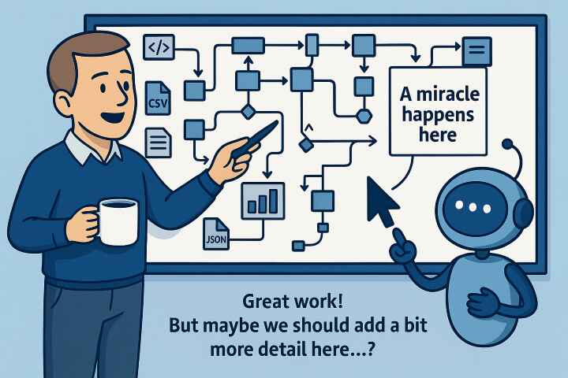

🌍 Earth Overshoot Day
Calculating the current status …
The world is changing – politically, socially, and ecologically. We often hear that “everything used to be better” and that “the world is going downhill.” RealityCheck aims to challenge that narrative — with facts instead of feelings. The central question is: How is our world really doing?
Nothing is god-given. Nothing is destiny. Humanity created the systems that shape our world – and humanity can change them again. Where there is will, there is a way. This project is about clarity, awareness, and hope.
As historian Yuval Noah Harari reminds us in his acclaimed series “Sapiens,” “Homo Deus,” and “21 Lessons for the 21st Century,” the world we live in is built on human imagination — our institutions, economies, and beliefs are stories we agreed to tell together. Because humanity created them, humanity can also change them. This insight connects RealityCheck with thinkers like Harari, Earth for All, and Hans Rosling’s Factfulness: a shared belief that understanding the world through facts is the first step toward improving it.
A symbolic expert assessment of human-made global risk, not a literal countdown or forecast.
The main challenges ahead are clear:
RealityCheck provides the data foundation for that transformation – understandable, comparable, and interactive.
There is an ocean of available data out there — thousands of indicators, each capturing just one small piece of reality. Without context, it’s easy to lose orientation. RealityCheck was built to change that.
The selected KPIs serve as a kind of magnifying glass – cutting through the data noise to focus on what truly matters for understanding human progress and planetary well-being. Each indicator was chosen based on three key principles: meaningfulness, reliability, and availability.
Meaningfulness ensures that the data says something about how people live, how societies function, and how the planet sustains us. Reliability guarantees that the numbers come from transparent, peer-reviewed, and regularly updated sources. And availability matters because insight without accessibility helps no one.
The most trustworthy data sources — such as Our World in Data and the World Bank — are therefore at the heart of this project. If you seek deeper information or want to explore a dataset in more detail, those platforms are the best place to start.
RealityCheck doesn’t try to show everything. It tries to show what’s essential — with clarity, consistency, and perspective.
If you discover an error or have an idea for improvement, I would be grateful to hear from you. You can reach me anytime via realitycheck.cw@gmail.com.
The first version of RealityCheck grew out of conversations with ChatGPT. I described what I wanted to explore, tried the resulting HTML, JavaScript and data structures in the browser, and refined them one step at a time. As the project grew, keeping filenames, data formats and decisions consistent across chats became harder.
RealityCheck now lives in a GitHub repository with project conventions, automated tests and a deployment workflow. I still use ChatGPT to explore ideas and explain what the data means. I also use OpenAI Codex in the project workspace to trace how features work, implement changes, run tests and review the result in the browser.
I decide which questions RealityCheck should answer, which sources are suitable and what gets published. When AI helps with an analysis or a code change, I check the source, the assumptions and what visitors actually see. The indicators come from the linked data providers. AI-assisted commentary helps explain the figures.
More about the coding workflow in the official OpenAI Codex documentation.

I live near Cologne, Germany. I’m married and a father of three. Professionally, I’m the head of an IT division in an insurance company – a “techie” at heart who loves structure, data, and problem solving.
RealityCheck is a passion project – born from curiosity and a belief that data can tell a more hopeful story than headlines. The world is not doomed; it’s changing. And we still decide how.
Built through curiosity, patience, and collaboration –
with facts, reason, and optimism.
Carsten Winterling
Cologne, Germany